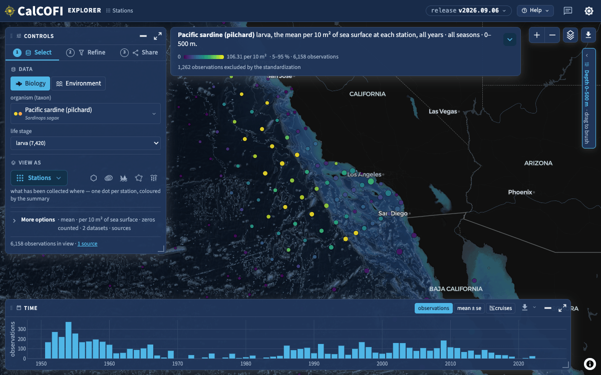
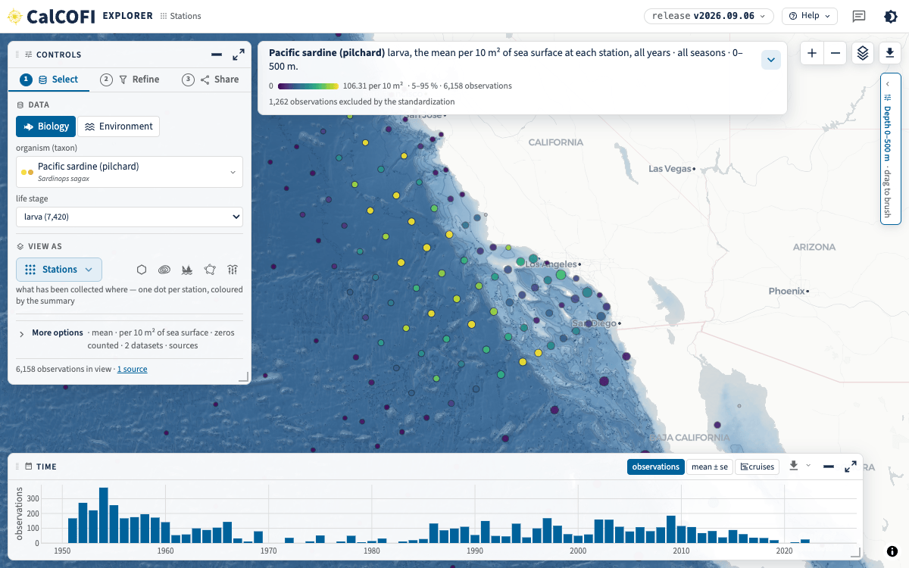
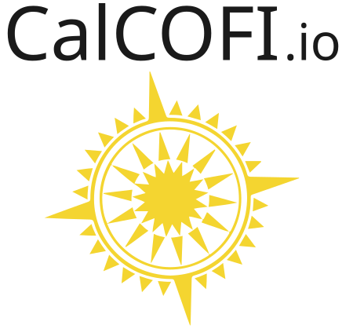
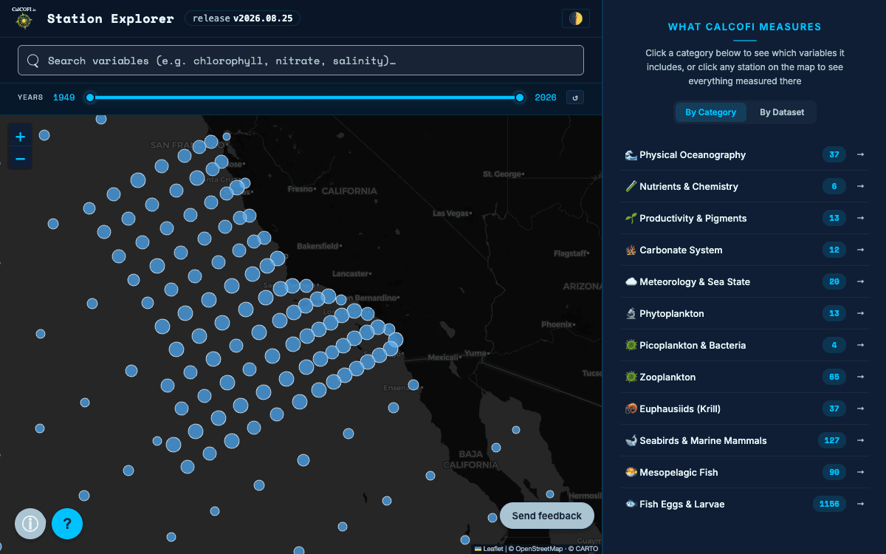
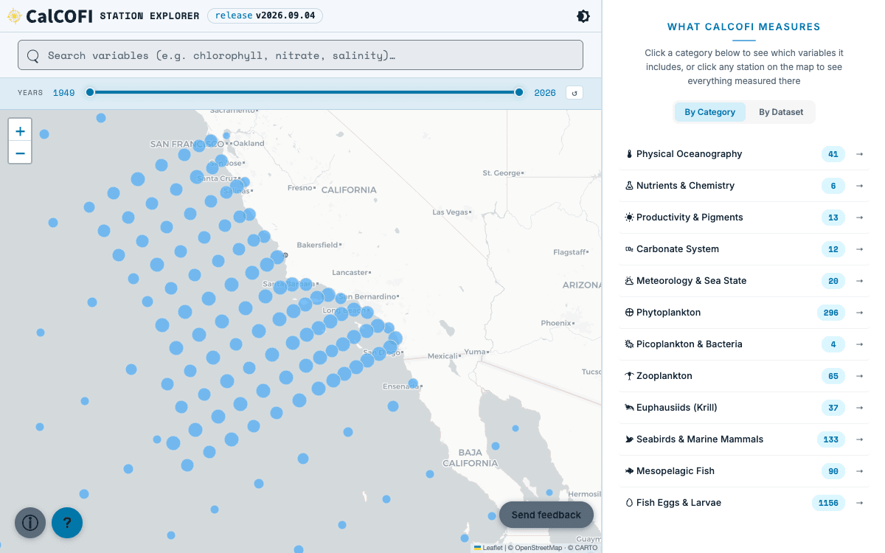
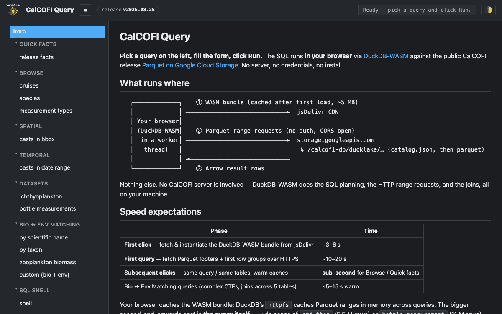
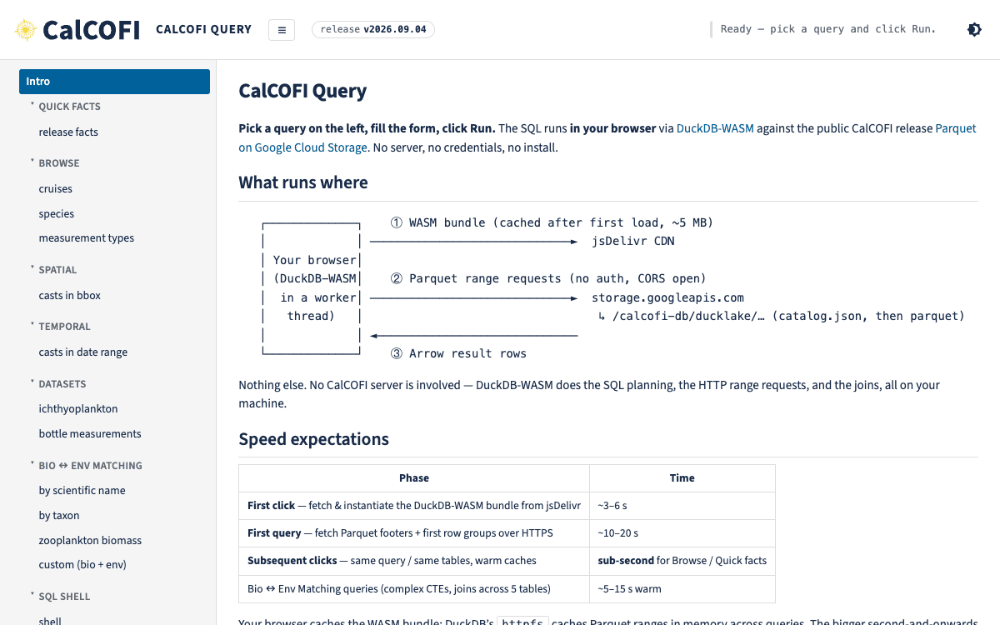

Apps
CalCOFI Explorer
One app, five lenses — stations, hexagons, cruises, regions and sections — for one organism or one ocean variable at a time over the frozen release.
DuckDB-WASM MapLibre Plotly
The SIO look as connective tissue: UC San Diego's palette — navy type on white, UCSD blue links, one yellow accent, Sand and navy bands — with Source Sans 3 and Teko standing in for Brix Sans and Refrigerator Deluxe, a horizontal lockup in the header, and the same tokens at two scales. This page is every token, both themes, both scales. Click the toggle at the right.
ship → workflows → database → apps · services · R
Explore the data Read the contract
fonts: checking…
Source Sans 3 (variable 200–900, roman + italic) for body and UI; Teko (variable 300–700) for page display headings only. Both OFL, self-hosted in fonts/ (72 KB, latin). The tokens name roles (--sans, --display), so licensing Brix Sans later is a one-file swap.
Body Source Sans 3 400 at 18 px on 1.44 — since 1949, CalCOFI cruises have sampled the California Current, one of the longest-running ocean observing programs anywhere. View all
Caption 14 px · italic 400 · bold 700 · semibold 600 · light 300 · 0123456789 · mono --fs-sm
Body 13 px — the explorer's working surface: one organism or one ocean variable at a time over the frozen release, the queries run in your browser, every view is a URL.
Group title 11.5 px 600 uppercase
Hint 11.5 px muted on the panel gray · 1,234 observations · release v2026.08.25
The same at 11 px in system-ui, for the eye: Source Sans 3's x-height is smaller, which is why --fs-sm is 11.5 px in the app scale.
…and 11 px in Source Sans 3 — hint 11 px muted on the panel gray · 1,234 observations · release v2026.08.25
Read from theme.css by this page (not copied), so the table cannot drift from the file. WCAG 2 contrast for every text token on every ground it is used on; AA for normal text is 4.5:1. Two values are derived from the brand rather than verbatim — --muted (Cool Gray darkened: the brand's #747678 is 4.2:1 on the panel gray) and light --warn (Gold darkened: #C69214 is 2.8:1 on white) — plus --cc-green/--cc-red for an app's go / no-go states.
| token | light (default) | dark | note | ||||||
|---|---|---|---|---|---|---|---|---|---|
| value | on --bg | on --panel | on --band | value | on --bg | on --panel | on --band | ||
The bar at the top of this page is the page-scale header (72 px, lockup 36 px, uppercase 15 px nav). The app-scale one (44 px, lockup 28 px, 13 px) is in the iframe under App. One bar, no utility strip, no search: the lockup → calcofi.io, the product title → its own root, the release chip, the product's links, the toggle.

Drawn by scripts/build_lockup.py: the v1 rosette + "CalCOFI" in Source Sans 3 800, shaped and outlined, so the SVG needs no font. The long programme name was tried beneath the wordmark and is illegible at 36 px; it stays in prose.
One yellow per view — it is the accent, not a colour. 8 px corners, 42 px tall, 200 px wide on pages; 28 px tall in apps.
An outline mono .cc-chip carries a fact — a provider, a licence, a format. A
tinted sans .cc-chip-ok / -warn / -na / -nogo / -accent carries a state, and is the only place
--warn may mean "needs attention": a pipeline stage or a holding is information, not a warning.
.cc-chip-quiet has neither border nor fill, for a label that must be present without asking for
attention. Every tint is in the table above, ≥ 4.5:1 in both themes.
SELECT * FROM read_parquet('https://storage.googleapis.com/…/data_0.parquet')
calcofi.org
.cc-tabs is the landing page's section nav, unchanged, in the contract;
.cc-copy is .cc-icon-button at the height of a line of text. The two new glyphs
are ui-copy and ui-external (51 in the sprite).
A static SVG the page draws itself — no map library, no tile server, no external asset. The
class is on the token, so the theme toggle repaints the map. The element has no background: the drawing
carries its own <rect class="water">, so a cell taller than the drawing stays page-coloured.
Rounded, borderless, no shadow; the image on top; an uppercase eyebrow; the title in the accent; the "open · source" row as text-links. --panel-2 on a band, --panel on the page ground.


One app, five lenses — stations, hexagons, cruises, regions and sections — for one organism or one ocean variable at a time over the frozen release.
DuckDB-WASM MapLibre Plotly


Every dataset at a station: what was sampled, when, and the time series behind it.


The band re-tokens its subtree: --fg, --muted, --accent and the panels resolve to values that read on navy, so a card, a chip or a text-link inside needs no second rule set. A text-link
The same tokens with <meta name="cc-scale" content="app">: 13 px body, 11.5 px labels, 4 px gutters, a 44 px header with the lockup at 28 px, 4 / 6 px corners. This is the explorer's rail, legend and a floating card in copied markup — the test of whether the type works at density. The whitespace of the page scale does not transfer, and is not supposed to.
Opens on its own: ?scale=app.
Organism
density per 10 m² · standard haul factor
Filters 1990–2005 · Q1 Q2
Export
1,234 stations · 45,678 samples · release v2026.08.25 · DuckDB-WASM in your browser
line 90 · station 60 · 33.2°N 119.3°W · seafloor 1,850 m
mean 36.4 per 10 m² · 412 tows · 1951–2024
● query 41 ms · ● 1 dataset without effort